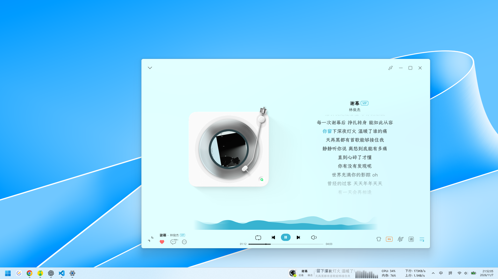
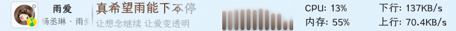

软件截图与动态示例
从任务栏的一句歌词，到顺手展开的控制卡片，看看软件的实际界面与操作。
软件截图
选择场景，点击图片放大
任务栏细节

QQ 音乐窗口是正在使用的播放器，底部任务栏中的封面、歌词与频谱才是任务栏歌词。
动态示例
手动播放，视频均为静音
0:00
看唱词逐字亮起，长句自然滚动，下一句提前出现在熟悉的位置。
截图与录屏效果仅供参考，请以实际产品效果为准。字体、颜色与特效可在设置中调整。